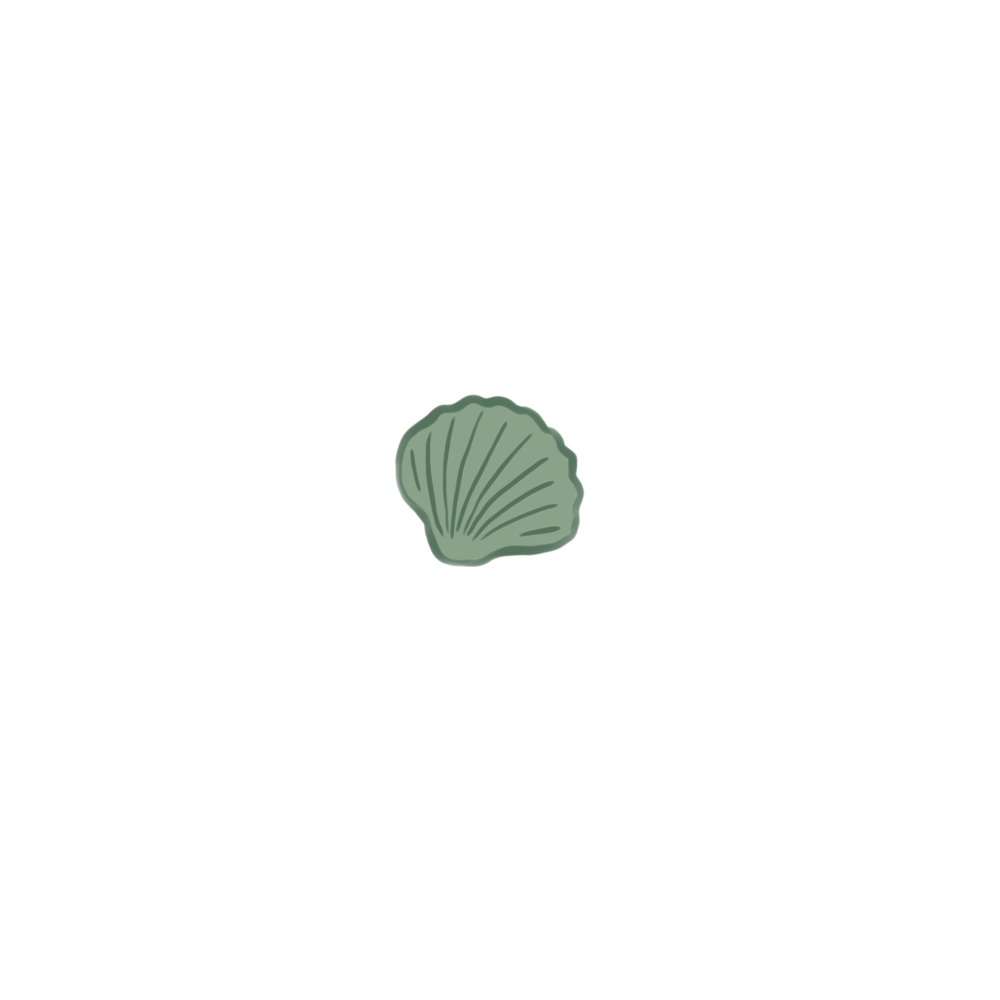
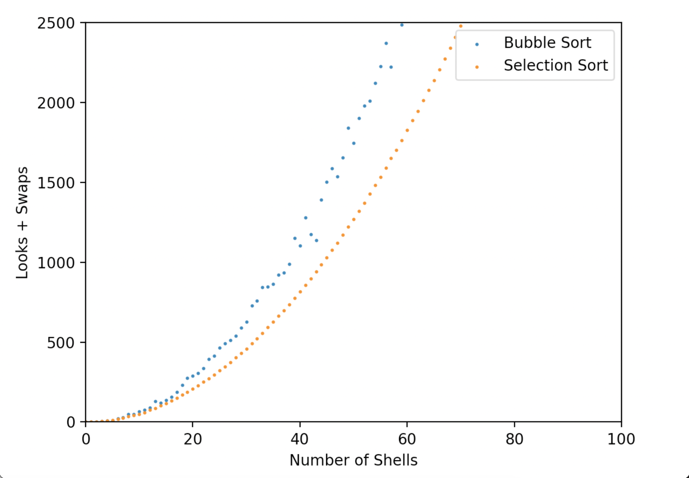

If you've ever arranged your books by color, grouped poker cards by
suits, or displayed your seashell collection by size, then you have
sorted! Sorting simply refers to re-arranging elements in a certain
order, and it is something computers have to do very often.
How we Sort
Sorting *seems* straightforward. Try sorting the seashells below
from smallest to biggest. Click on two shells to swap their places.
Nice job! For computers, however, sorting is not so trivial.
Computers don't have eyes like we do, so they can't see all the
shells at once. Let's now try sorting as though we were a computer.
How computers sort
This is how a computer would "see" things. Click on a box to "look"
at a seashell. Click on the shell again and on another box to swap
their places. Try to sort this new set of shells in as few
looks and swaps as possible!

Number of looks: 0
Number of swaps: 0
Nice job! What are some strategies you used when deciding whether to
swap or look at a shell? Chances are, the strategies you used are
similar to what a computer would use.
Another key charactersitc of computers is that they must follow
rules that determine a specific order of "looking" and "swapping"
(aka an algorithm). There exist many different sorting algorithms,
each with their own unique strategy. Let's take a look at two of
them, and compare how well you did!
Bubble Sort
First up, it's bubble sort! The shell you are currently looking at
is
highlighted. Sorting algorithms
tend to look at the shells in order, so pressing next will look at
the next shell. If we reach the last shell, we can loop back to the
first shell. Additionally, computers, like us, can make note of
certain shells it has looked at. In this algorithm, you can look
ahead to the next shell and make note
of it. Follow the bubble sort algorithm step-by-step to sort all the
seashells.
Toggle to see all shells
Algorithm
Repeat the following two steps until all shells are sorted:
If the shell you are looking at is bigger than the next
shell, swap them
Look at the next shell
Number of looks: 2
Number of swaps: 0
The next shell:
Selection Sort
Next, it's selection sort! Again, the shell you are currently
looking at is
highlighted, and pressing next
will look at the next shell. Now, each time we make a pass through
the shells, we will make note of
the leftmost unsorted shell and the
smallest unsorted shell that we
encounter. Follow the selection sort algorithm step-by-step to sort
all the seashells.
Toggle to see all shells
Algorithm
Repeat the following two steps until all shells are sorted:
Look through all of the unsorted shells to find the smallest
shell.
Swap the smallest shell with the leftmost unsorted shell.
Number of looks: 1
Number of swaps: 0
The leftmost unsorted shell:
The smallest unsorted shell:
Which Algorithm is Better?
Your Sort
Bubble Sort
Selection Sort
As you might have guessed, the reason why there exists more than one
sorting algorithm is because some perform better than others (less
looks and less swaps). How well an algorithm does depends a lot on
the intial order of the shells. For example, given this set of
shells, which algorithm do you think will perform better?
Bubble Sort
If the shell you are looking at is bigger than the next shell,
swap them
Look at the next shell
Number of Looks: 20
Number of Swaps: 4
Selection Sort
Look through all of the unsorted shells to find the smallest
shell.
Swap the smallest shell with the leftmost unsorted shell.
Number of Looks: 20
Number of Swaps: 5
You're right! Bubble sort now makes fewer swaps than selection sort!
Since looking at single examples does not tell us much about which
algorithm is better, let's see how the two algorithms compare on
average.
Oops! Bubble sort now actuallly makes fewer swaps than selection
sort! Since looking at single examples does not tell us much about
which algorithm is better, let's see how the two algorithms compare
on average.
Pick which sort you think will do better!
Which Algorithm is Better on Average?
We can create a graph where the x-axis represents the number of
shells to be sorted and the y-axis represents the number of looks
plus swaps it takes to sort the shells. Then, we generate sets of
shells of varying lengths and initial orders, sort them with bubble
sort and insertion sort, and then plot the results. What would the
graph look like?

We can see that selection sort seems better than bubble sort.
However, for both sorts, the number of looks and swaps grows
quadratically on average as the number of shells increases. So while
these sorting algorithms are fine when there are only a small number
of shells to be sorted, they are not ideal when that number becomes
very big. So what should we do?
More Sorting Algorithms!
Lucky for us, there are more sorting algorithms out there!
Bubble Sort
Selection Sort
Insertion Sort
Merge Sort
Quick Sort
Bubble sort and selection sort barely scratch the surface of the
possible sorting algorithms out there! They are but an introduction
to a whole world of algorithms which aim to solve a simple task, yet
require much sophisticated thought! I hope you enjoyed!